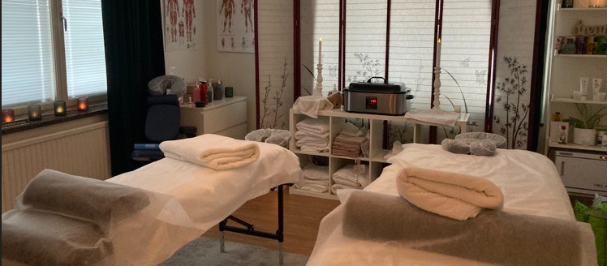

Välkommen till Hjärta & Hälsa – en plats där välmående och omsorg möts för att främja kroppslig och mental hälsa.
Jag är Eva Söderlund, grundare av Hjärta & Hälsa som tidigare bar namnet Ältas lugna oas som jag startade 2020.
Med en bakgrund som utbildad massör och barn-HLR instruktör, samt med planer på att utöka min kompetens till att inkludera
vuxen-HLR till hösten, strävar jag efter att skapa en positiv inverkan på människors liv genom att erbjuda lindring åt dem som
lider av stelhet och ömhet i sina kroppar.
Min passion för människors välbefinnande ledde mig till att utbilda mig till barn-HLR instruktör år 2024, med ett klart definierat mål:
att öka medvetenheten och kunskapen kring hjärt- och lungräddning i samhället. Genom att erbjuda HLR-kurser strävar jag efter att rusta
människor med de nödvändiga färdigheterna för att agera i nödsituationer och rädda liv.
Du är hjärtligt välkommen att boka en stunds avkoppling och förnyelse genom en massage hos mig på Vendelsökliniken, belägen på Vendelsö skolväg 8.
Varje behandling är skräddarsydd för att möta dina individuella behov och främja en känsla av välbefinnande från insidan och ut.
För att boka en HLR-kurs, är du välkommen att kontakta mig på telefonnummer 0734 23 99 55 eller via e-post på hjartahalsa@hotmail.com.
Tillsammans kan vi göra skillnad och sprida kunskap som kan rädda liv.
Varmt välkommen till Hjärta & Hälsa – där omtanke och hälsa är i fokus.
